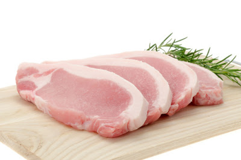
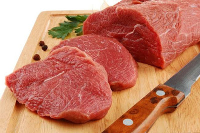
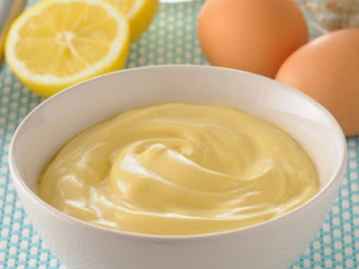
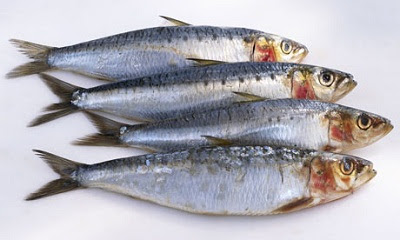

DAGING BABI
Daging babi termasuk jenis daging yang banyak mengandung lemak jenuh. Bahkan dalam setiap 100 gram daging babi mengandung sekitar 15.80 gram lemak jenuh. Itu adalah jumlah lemak jenuh dalam daging babi yang masih belum diolah.
DAGING SAPI
Lemak jenuh ini sama sekali tidak bisa dimasak hingga matang karena sulit untuk dipecah oleh panas.. Dalam setiap 100 gram daging sapi ditemukan sekitar 52.3 gram lemak jenuh.
PAHA AYAM
Sekitar 300 gram daging paha ayam dengan kulit mengandung sekitar 6.9 gram lemak jenuh. Sementara jumlah normal yang disarankan hanya sekitar 1.6 gram saja.
MAYONAISE
Setiap satu sendok mayonaise berisi sekitar 1.5 gram lemk jenuh. Jumlah lemak total sekitar 9.8 gram dan ini akan meningkatkan resiko penyakit jantung. Terlalu banyak mengkonsumsi mayonaise juga bisa meningkatkan berat badan, meningkatkan kadar kolesterol dan resiko penyakit tekanan darah tinggi.
COKELAT
Dalam setiap 100 gram coklat yang sudah dimasak mengandung sekitar 32.4 gram lemak jenuh. Konsumsi cokelat berlebihan bisa mengancam kesehatan. Umumnya berlebihan makan cokelat akan meningkatkan berat badan dan kandungan kolesterol dalam tubuh
MINYAK IKAN
Minyak ikan adalah produk hewani lain yang memiliki lemak jenuh tinggi. Padahal, minyak ikan dan ikan merupakan sumber asam lemak omega-3 yang sehat. Di antara jenis ikan yang mengandung lemak jenuh dalam jumlah tertinggi meliputi minyak sarden (30%), minyak ikan cod (23%), minyak herring (21%) dan minyak salmon (20%).
IKAN SARDEN
Ikan sarden yang biasanya diolah menjadi makanan kaleng juga mengandung kadar lemak jenuh yang cukup tinggi. Dalam setiap 100 gram ikan sarden mengandung sekitar 29.9 gram lemak jenuh. Ikan sarden dikenal sebagai ikan yang banyak mengandung minyak.
BIJI DAN KACANG
Karena mengandung vitamin, mineral, serat dan lemak sehat, biji dan kacang-kacangan umumnya dianggap sebagai makanan ringan yang sehat. Namun, seseorang tidak dapat mengabaikan fakta bahwa makanan ini juga mengandung lemak jenuh yang bisa membahayakan jika dikonsumsi berlebihan. Di antara bijiian dan kacang-kacangan yang mengandung lemak jenuh tertinggi contohnya pilinat denyang terdiri dari lemak jenuh (13%), kacang Brazil (15%), kacang Macadamia (12%), biji semangka, kacang mete dan kacang pinus (10%) dan biji wijen (9%).